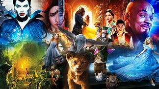

One Piece
Nível: 5/5
One Piece é sobre um pirata que estica
Ele obteve seus poderes comendo uma fruta
que lhe concedeu poderes de borracha.
Conceça mais sobre One Piece: Leia +
One Piece é sobre um pirata que estica
Ele obteve seus poderes comendo uma fruta
que lhe concedeu poderes de borracha.
Conceça mais sobre One Piece: Leia +
Andar de bike é uma das coisas que mais gosto de fazer
se eu puder ir de bike pra algum lugar, pra evitar ônibus
com certeza eu vou de bike.
Leia mais sobre os benefícios que tras a sua saúde,
andar de bicicleta:
Click aqui!
Umas coisas que mais vem me chamando atenção é esrudar sobre
Codgos de Programação.
Pesquise mais sobre essa área de tecnologia Click aqui!

Assistir os filmes da disney e lembrar da infancia.
Fez parte da infancia de todxs.
Assista todos os filmes da Disney nessa plataforma: Click aqui!